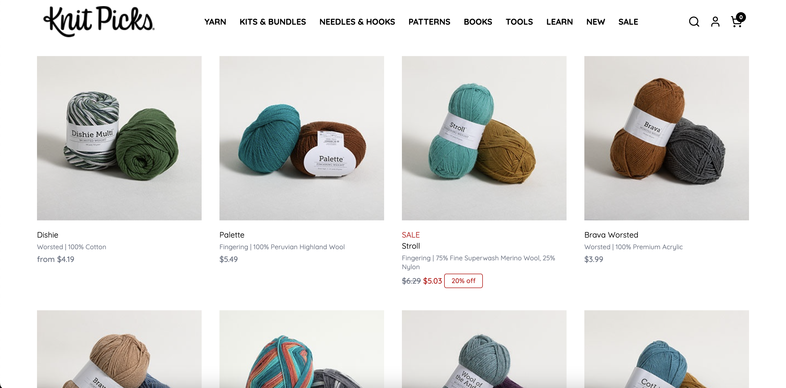

$$ : KnitPicks is a great way to find natural fibers for your garment. All these yarns are very garment and knit friendly depending on your personal preference. It is one of the top sites for buying yarn.

Please guage swatch. It's not that that many extra steps.
It will keep you from frogging your project or spending weeks on a garment to only realize it doesn't fit.
If you make garments out of worsted weight cotton yarn, don't do regular bind off and try italian bind off instead.
Your garment's bind off will have no flexibility which means you may not be able to put it on.
I personally despise color work and I think it looks very off. But do not be afraid to make swatch tests to see if your yarn is approrpiate and match each other.
If you use two differnt weight yarns even if its slightly off, it may change your entire guage and texture.
If you crochet and want to start knitting, I recommend looking into the continental style knitting because it is similar to crochet tension.
But make sure your stitches are not twisted.